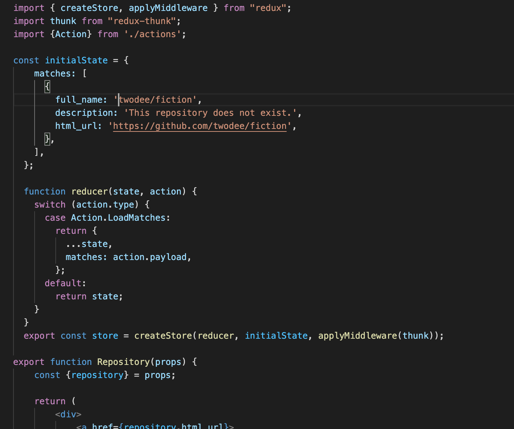
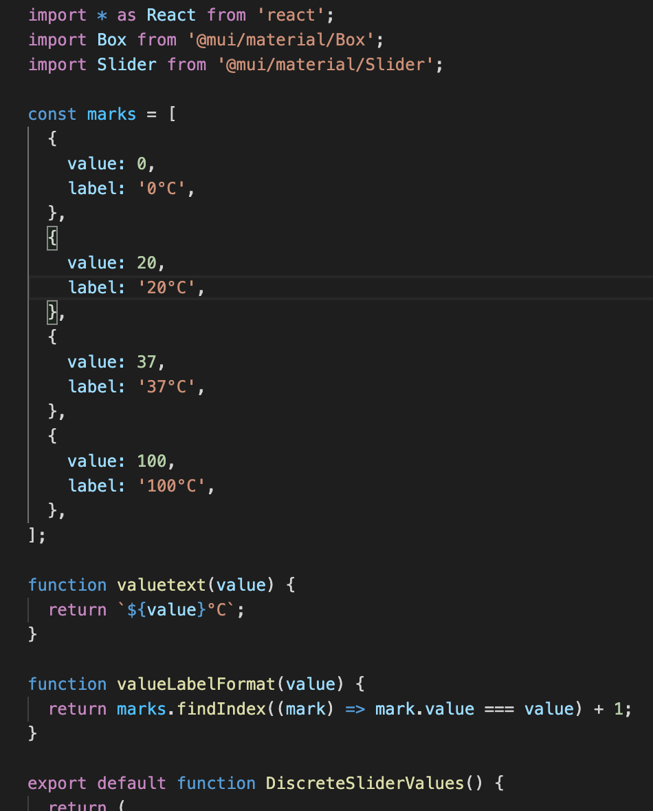
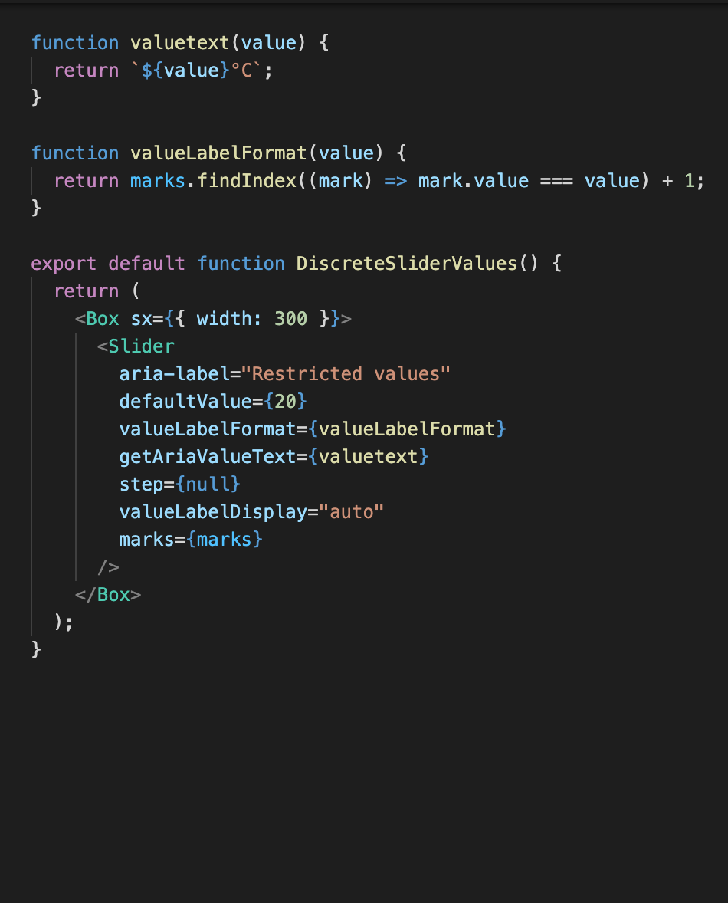
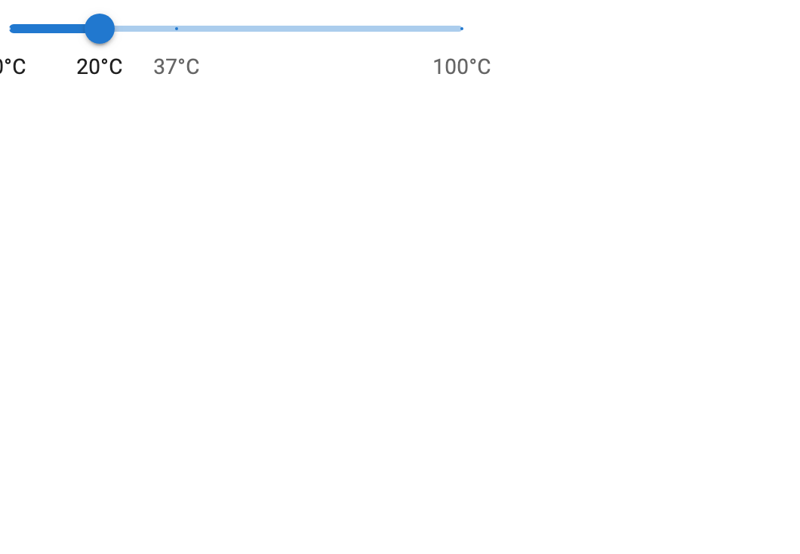

11/15 - 11/19, States
This week our readings covered everything there was to know about state.
What does state mean in the context of the class? In React each component
current values are known as its state. Components can rely on the
data from another in order for them to respond as a developer wants them to.
State changes can be slow as they have to travel through the component tree to
get to different components. This is where Redux comes in to save the day. Redux
allows you to store states globally, which allows components the ability to access
them from anywhere.

While thinking of ideas for my project I thought I might need a slider. I wondered if React
had a way I could make one (which it does), but while searching for how to do this I started reading
about different React libraries. I found one called MUI which has many different components one of them
being a slider!



Sources:
https://thedaylightstudio.com/blog/2018/03/14/what-is-state-in-web-application-development
https://redux.js.org/tutorials/essentials/part-1-overview-concepts
Return.